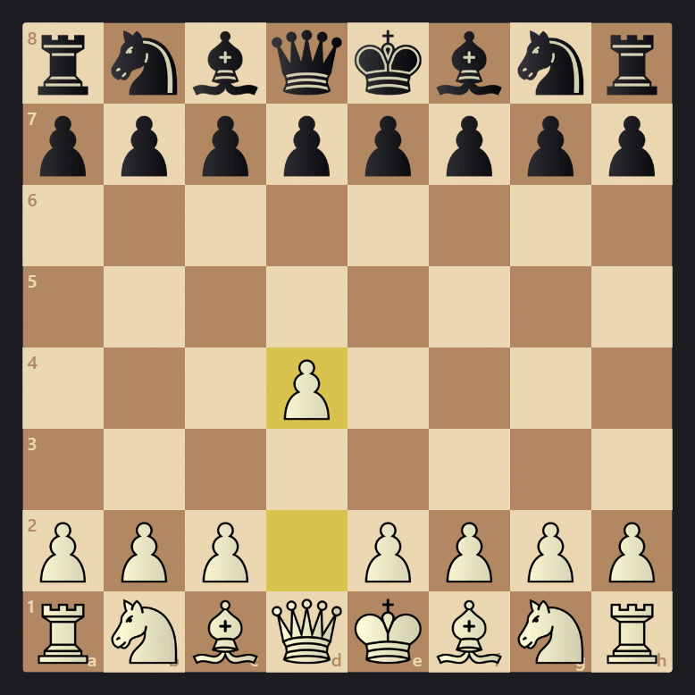
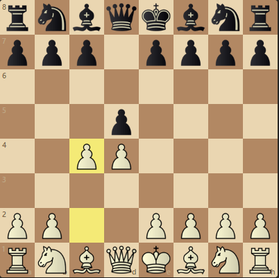
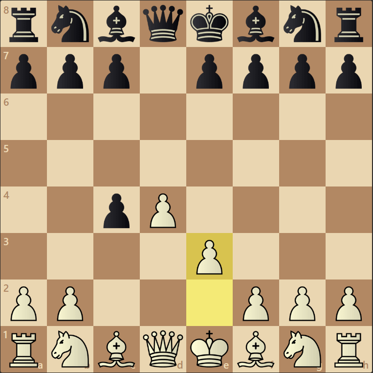
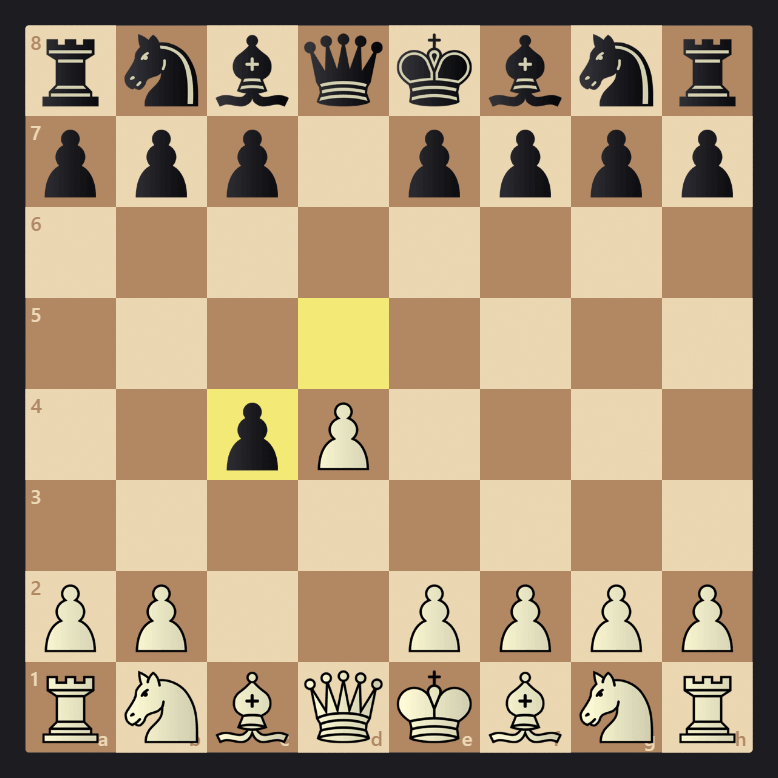
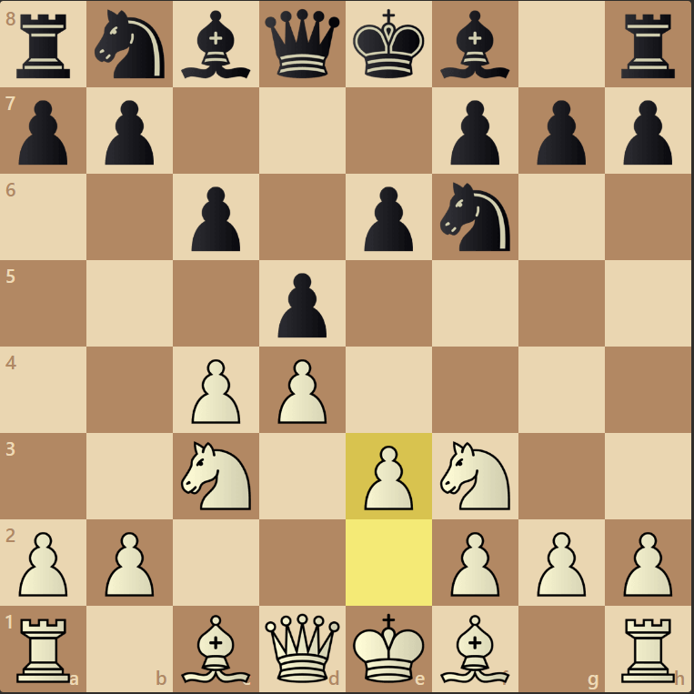

Queen's Gambit start with pawn to d4.

Black's usual response is d5 to which white responds with c4

In the accepted variation black accepts the gambit with dxc4 and white
can open up the diagonal for the light-scored bishop with e3.

White proceeds to take the d4 pawn and both resume to normal development.

Black can also decline the gambit with enforcing their pawn structure.
This often leads to both side developing their pieces normally
with the c4 pawn creating pressure on the center.